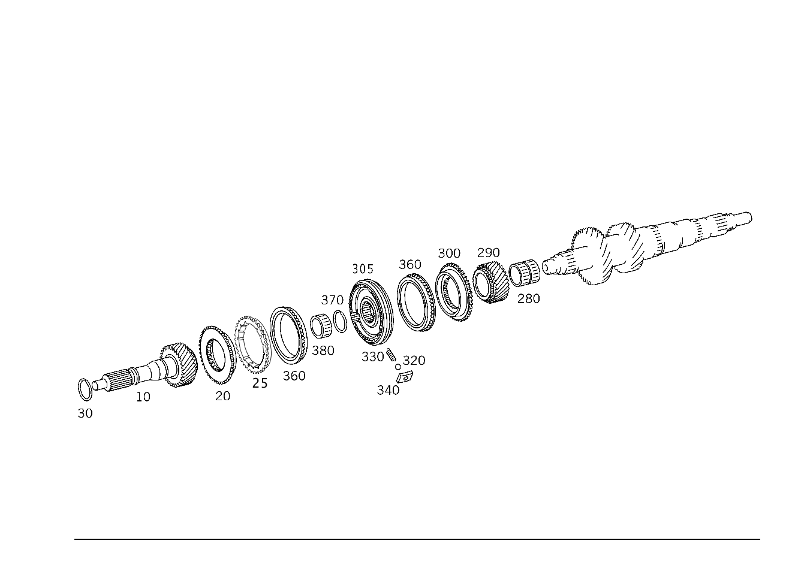

| № | Артикул | Название | Кол. | Примечание | Ограничение |
|---|---|---|---|---|---|
| 10 | A 211 262 03 02 | - Приводной вал (ANTRIEBSWELLE) | 1 | [402] БОЛЬШЕ НЕ ПОСТАВЛЯЕТСЯ | G660/G662/G663/G664/G667/G668/G669 |
| 10 | A 211 262 06 02 | - Приводной вал (ANTRIEBSWELLE) | 1 | [402] БОЛЬШЕ НЕ ПОСТАВЛЯЕТСЯ | |
| 20 | A 211 262 03 35 | - Синхронизатор (SYNCHRONKOERPER) | 1 | ПЯТАЯ И ШЕСТАЯ ПЕРЕДАЧА [402] БОЛЬШЕ НЕ ПОСТАВЛЯЕТСЯ | |
| 20 | A 211 262 07 35 | - Синхронизатор (SYNCHRONKOERPER) | 1 | ПЯТАЯ И ШЕСТАЯ ПЕРЕДАЧА | |
| 25 | A 204 262 01 34 | - Кольцо синхронизатора | 1 | ПЯТАЯ И ШЕСТАЯ ПЕРЕДАЧА | G660+424/G660/G662/G663/G664/G665/G666/G667/G668/G669 |
| 25 | A 203 262 14 34 | - Кольцо синхронизатора | 1 | ПЯТАЯ И ШЕСТАЯ ПЕРЕДАЧА | G660/G662/G663/G667/G668 |
| 30 | A 203 994 12 35 | - Пруж. стопорное кольцо (SPRENGRING) | 1 | ПРИВОДНОЙ ВАЛ 1.70 MM; 1,70MM | |
| 30 | A 203 994 13 35 | - Пруж. стопорное кольцо (SPRENGRING) | 1 | ПРИВОДНОЙ ВАЛ 1.75 MM; 1,75MM | |
| 30 | A 203 994 14 35 | - Пруж. стопорное кольцо (SPRENGRING) | 1 | ПРИВОДНОЙ ВАЛ 1.80 MM; 1,80MM | |
| 30 | A 203 994 15 35 | - Пруж. стопорное кольцо (SPRENGRING) | 1 | ПРИВОДНОЙ ВАЛ 1.85 MM; 1,85MM | |
| 30 | A 203 994 16 35 | - Пруж. стопорное кольцо (SPRENGRING) | 1 | ПРИВОДНОЙ ВАЛ 1.90 MM; 1,90MM | |
| 30 | A 203 994 17 35 | - Пруж. стопорное кольцо (SPRENGRING) | 1 | ПРИВОДНОЙ ВАЛ 1.95 MM; 1,95MM | |
| 30 | A 203 994 18 35 | - Пруж. стопорное кольцо (SPRENGRING) | 1 | ПРИВОДНОЙ ВАЛ 2.00 MM; 2,00MM | |
| 30 | A 203 994 19 35 | - Пруж. стопорное кольцо (SPRENGRING) | 1 | ПРИВОДНОЙ ВАЛ 2.05 MM; 2,05MM | |
| 35 | A 211 260 19 22 | - Вторичный вал (HAUPTWELLE) | 1 | [402] БОЛЬШЕ НЕ ПОСТАВЛЯЕТСЯ | G660/G662/G667/G668 |
| 35 | A 211 260 33 22 | - Вторичный вал (HAUPTWELLE) | 1 | [697] ДЕТАЛЬ ПОСТАВЛЯЕТСЯ ТОЛЬКО/ИЛИ ТАКЖЕ КАК ЗАП.ЧАСТЬ | G660/G662/G667/G668 |
| 40 | A 211 262 16 05 | - Вторичный вал | 1 | G660/G662/G663/G664/G667/G668/G669 | |
| 40 | A 211 262 19 05 | - Вторичный вал | 1 | G660/G662/G663/G664/G667/G668/G669 | |
| 40 | A 211 262 28 05 | - Вторичный вал | 1 | G660/G662/G663/G664/G667/G668/G669 | |
| 40 | A 211 262 26 05 | - Вторичный вал | 1 | [402] БОЛЬШЕ НЕ ПОСТАВЛЯЕТСЯ | G660/G662/G663/G664/G665/G666/G667/G668/G669 |
| 50 | A 019 981 66 10 | - Игольчатый подшипник (NADELLAGER) | 1 | ВТОРАЯ ПЕРЕДАЧА | |
| 60 | A 211 260 11 08 | - Св. вращ. шестерня | 1 | ВТОРАЯ ПЕРЕДАЧА | G660/G662/G663/G664/G667/G668/G669 |
| 60 | A 211 260 18 08 | - Св. вращ. шестерня | 1 | ВТОРАЯ ПЕРЕДАЧА | G660/G662/G663/G664/G667/G668/G669 |
| 60 | A 211 260 21 08 | - Св. вращ. шестерня (LOSRAD) | 1 | ВТОРАЯ ПЕРЕДАЧА | G660/G662/G663/G664/G665/G666/G667/G668/G669 |
| 65 | A 211 260 06 45 | - Синхронизатор | 1 | ПЕРВАЯ И ВТОРАЯ ПЕРЕДАЧА | G660/G662/G663/G664/G667/G668/G669 |
| 65 | A 211 260 16 45 | - Корпус синхронизатора | 1 | ПЕРВАЯ И ВТОРАЯ ПЕРЕДАЧА | G660/G662/G663/G664/G667/G668/G669 |
| 65 | A 211 260 20 45 | - Синхронизатор (SYNCHRONKOERPER) | 1 | ПЕРВАЯ И ВТОРАЯ ПЕРЕДАЧА | G660/G662/G663/G664/G665/G666/G667/G668/G669 |
| 113 | A 211 260 03 45 | - Синхронизатор | 1 | ПЕРВАЯ ПЕРЕДАЧА | G660/G662/G663/G664/G667/G668/G669 |
| 113 | A 211 260 09 45 | - Синхронизатор | 1 | ПЕРВАЯ ПЕРЕДАЧА | G660/G662/G663/G664/G667/G668/G669 |
| 113 | A 211 260 13 45 | - Синхронизатор | 1 | ПЕРВАЯ ПЕРЕДАЧА | G660/G662/G664/G667/G668/G669 |
| 113 | A 211 260 14 45 | - Синхронизатор | 1 | ПЕРВАЯ ПЕРЕДАЧА | G660/G662/G664/G667/G668/G669 |
| 113 | A 211 260 32 45 | - Синхронизатор (SYNCHRONKOERPER) | 1 | ПЕРВАЯ ПЕРЕДАЧА | G660/G662/G664/G665/G666/G667/G668/G669 |
| 116 | A 211 260 02 45 | - Синхронизатор | 1 | ВТОРАЯ ПЕРЕДАЧА | G660/G662/G664/G667/G668/G669 |
| 116 | A 211 260 10 45 | - Синхронизатор | 1 | ВТОРАЯ ПЕРЕДАЧА | G660/G662/G664/G667/G668/G669 |
| 116 | A 211 260 14 45 | - Синхронизатор | 1 | ВТОРАЯ ПЕРЕДАЧА | G660/G662/G664/G667/G668/G669 |
| 116 | A 211 260 32 45 | - Синхронизатор (SYNCHRONKOERPER) | 1 | ВТОРАЯ ПЕРЕДАЧА | G660/G662/G664/G665/G666/G667/G668/G669 |
| 150 | A 211 262 16 94 | - Пруж. стопорное кольцо (SPRENGRING) | 1 | ВТОРАЯ ПЕРЕДАЧА 2.40 MM | |
| 150 | A 211 262 17 94 | - Пруж. стопорное кольцо | 1 | ВТОРАЯ ПЕРЕДАЧА 2.45 MM | |
| 150 | A 211 262 18 94 | - Пруж. стопорное кольцо (SPRENGRING) | 1 | ВТОРАЯ ПЕРЕДАЧА 2.50 MM | |
| 150 | A 211 262 55 94 | - Пруж. стопорное кольцо | 1 | ВТОРАЯ ПЕРЕДАЧА 2.55 MM | |
| 150 | A 211 262 56 94 | - Пруж. стопорное кольцо (SPRENGRING) | 1 | ВТОРАЯ ПЕРЕДАЧА 2.60 MM | |
| 150 | A 211 262 57 94 | - Пруж. стопорное кольцо | 1 | ВТОРАЯ ПЕРЕДАЧА 2.65 MM | |
| 150 | A 211 262 58 94 | - Пруж. стопорное кольцо (SPRENGRING) | 1 | ВТОРАЯ ПЕРЕДАЧА 2.70 MM | |
| 150 | A 211 262 59 94 | - Пруж. стопорное кольцо | 1 | ВТОРАЯ ПЕРЕДАЧА 2.75 MM | |
| 150 | A 211 262 60 94 | - Пруж. стопорное кольцо (SPRENGRING) | 1 | ВТОРАЯ ПЕРЕДАЧА 2.80 MM | |
| 160 | A 019 981 65 10 | - Игольчатый подшипник (NADELLAGER) | 1 | ПЕРВАЯ ПЕРЕДАЧА | G660/G662/G663/G664/G665/G666/G667/G668/G669 |
| 170 | A 211 260 15 08 | - Св. вращ. шестерня | 1 | ПЕРВАЯ ПЕРЕДАЧА | G660/G662/G664/G667/G668/G669 |
| 170 | A 211 260 20 08 | - Шестерня (ZAHNRAD) | 1 | ПЕРВАЯ ПЕРЕДАЧА | G660/G662/G664/G667/G668/G669 |
| 170 | A 211 260 24 08 | - Косозубое колесо (SCHRAEGRAD) | 1 | ПЕРВАЯ ПЕРЕДАЧА | G660/G662/G664/G665/G666/G667/G668/G669 |
| 180 | A 211 262 00 62 | - Упорная шайба (ANLAUFSCHEIBE) | 1 | ПЕРЕДАЧА ЗАДНЕГО ХОДА [417] БОЛЬШЕ НЕ ПОСТАВЛЯЕТСЯ, ЗАКАЗЫВАТЬ КОМПЛЕКТ ПОСТАВКИ | G660/G662/G663/G667/G668/G669 |
| 180 | A 211 262 10 62 | - Упорная шайба | 1 | ПЕРЕДАЧА ЗАДНЕГО ХОДА | G660/G662/G663/G664/G665/G666/G667/G668/G669 |
| 200 | A 000 980 35 10 | - Игольчатый подшипник | 1 | ПЕРЕДАЧА ЗАДНЕГО ХОДА | G660/G662/G663/G664/G665/G666/G667/G668/G669 |
| 200 | A 000 980 34 10 | - Игольчатый подшипник (NADELLAGER) | 1 | ПЕРЕДАЧА ЗАДНЕГО ХОДА | G660/G662/G663/G664/G665/G666/G667/G668/G669 |
| 210 | A 211 260 16 08 | - Св. вращ. шестерня | 1 | ПЕРЕДАЧА ЗАДНЕГО ХОДА | G660/G662/G663/G667/G668 |
| 210 | A 211 260 27 08 | - Шестерня (ZAHNRAD) | 1 | ПЕРЕДАЧА ЗАДНЕГО ХОДА | G660/G662/G663/G667/G668 |
| 215 | A 203 260 15 45 | - Синхронизатор | 1 | ПЕРЕДАЧА ЗАДНЕГО ХОДА | G660/G662/G663/G667/G668 |
| 215 | A 203 260 26 45 | - Синхронизатор (SYNCHRONKOERPER) | 1 | ПЕРЕДАЧА ЗАДНЕГО ХОДА | G660/G662/G663/G667/G668 |
| 230 | N 005401 305000 | - Шар (KUGEL) | 3 | TO A 203 262 03 18 | G660/G662/G663/G664/G667/G668/G669 |
| 240 | A 203 262 02 93 | - пружина (FEDER) | 3 | TO A 203 262 03 18 | G660/G662/G663/G664/G667/G668/G669 |
| 250 | A 203 262 03 18 | - Нажимной упор (DRUCKSTUECK) | 3 | G660/G662/G663/G664/G667/G668/G669 | |
| 260 | A 168 360 01 18 | - Нажимной упор (DRUCKSTUECK) | 3 | G660/G662/G663/G667/G668 | |
| 260 | A 203 262 10 18 | - Нажимной упор (DRUCKSTUECK) | 3 | G660/G662/G663/G667/G668 | |
| 270 | A 203 262 03 34 | - Кольцо синхронизатора | 1 | ПЕРЕДАЧА ЗАДНЕГО ХОДА | G660/G662/G663/G667/G668 |
| 270 | A 203 262 18 34 | - Кольцо синхронизатора (SYNCHRONRING) | 1 | ПЕРЕДАЧА ЗАДНЕГО ХОДА | G660/G662/G663/G667/G668 |
| 280 | A 019 981 71 10 | - Игольчатый подшипник (NADELLAGER) | 1 | ШЕСТАЯ ПЕРЕДАЧА | G660/G662/G663/G664/G665/G666/G667/G668/G669 |
| 290 | A 211 262 01 16 | - Шестерня (ZAHNRAD) | 1 | ШЕСТАЯ ПЕРЕДАЧА [402] БОЛЬШЕ НЕ ПОСТАВЛЯЕТСЯ | G660/G662/G663/G664/G667/G668/G669 |
| 290 | A 211 262 05 16 | - Косозубое колесо (SCHRAEGRAD) | 1 | ШЕСТАЯ ПЕРЕДАЧА | G660/G662/G663/G664/G665/G666/G667/G668/G669 |
| 300 | A 211 262 03 35 | - Синхронизатор (SYNCHRONKOERPER) | 1 | ПЯТАЯ И ШЕСТАЯ ПЕРЕДАЧА [402] БОЛЬШЕ НЕ ПОСТАВЛЯЕТСЯ | |
| 305 | A 203 260 14 45 | - Синхронизатор | 1 | ПЯТАЯ И ШЕСТАЯ ПЕРЕДАЧА | G660/G662/G663/G664/G667/G668/G669 |
| 305 | A 203 260 18 45 | - Синхронизатор | 1 | ПЯТАЯ И ШЕСТАЯ ПЕРЕДАЧА | G660/G662/G663/G664/G667/G668/G669 |
| 305 | A 204 260 00 45 | - Корпус синхронизатора | 1 | ПЯТАЯ И ШЕСТАЯ ПЕРЕДАЧА | G660/G662/G663/G664/G665/G666/G667/G668/G669 |
| 320 | N 005401 305000 | - Шар (KUGEL) | 3 | G660/G662/G663/G664/G665/G666/G667/G668/G669 | |
| 330 | A 203 262 02 93 | - пружина (FEDER) | 3 | G660/G662/G663/G664/G665/G666/G667/G668/G669 | |
| 340 | A 203 262 03 18 | - Нажимной упор (DRUCKSTUECK) | 3 | G660/G662/G663/G664/G665/G666/G667/G668/G669 | |
| 360 | A 203 262 02 34 | - Кольцо синхронизатора | 2 | ПЯТАЯ И ШЕСТАЯ ПЕРЕДАЧА | G660/G662/G663/G664/G667/G668/G669 |
| 360 | A 203 262 14 34 | - Кольцо синхронизатора | 1 | ПЯТАЯ И ШЕСТАЯ ПЕРЕДАЧА | G660/G662/G663/G667/G668 |
| 360 | A 204 262 01 34 | - Кольцо синхронизатора | 1 | ПЯТАЯ И ШЕСТАЯ ПЕРЕДАЧА | G660+424/G660/G662/G663/G664/G665/G666/G667/G668/G669 |
| 370 | A 203 994 12 35 | - Пруж. стопорное кольцо (SPRENGRING) | 1 | ПЯТАЯ И ШЕСТАЯ ПЕРЕДАЧА 1.70 MM; 1,70MM | |
| 370 | A 203 994 13 35 | - Пруж. стопорное кольцо (SPRENGRING) | 1 | ПЯТАЯ И ШЕСТАЯ ПЕРЕДАЧА 1.75 MM; 1,75MM | |
| 370 | A 203 994 14 35 | - Пруж. стопорное кольцо (SPRENGRING) | 1 | ПЯТАЯ И ШЕСТАЯ ПЕРЕДАЧА 1.80 MM; 1,80MM | |
| 370 | A 203 994 15 35 | - Пруж. стопорное кольцо (SPRENGRING) | 1 | ПЯТАЯ И ШЕСТАЯ ПЕРЕДАЧА 1.85 MM; 1,85MM | |
| 370 | A 203 994 16 35 | - Пруж. стопорное кольцо (SPRENGRING) | 1 | ПЯТАЯ И ШЕСТАЯ ПЕРЕДАЧА 1.90 MM; 1,90MM | |
| 370 | A 203 994 17 35 | - Пруж. стопорное кольцо (SPRENGRING) | 1 | ПЯТАЯ И ШЕСТАЯ ПЕРЕДАЧА 1.95 MM; 1,95MM | |
| 370 | A 203 994 18 35 | - Пруж. стопорное кольцо (SPRENGRING) | 1 | ПЯТАЯ И ШЕСТАЯ ПЕРЕДАЧА 2.00 MM; 2,00MM | |
| 370 | A 203 994 19 35 | - Пруж. стопорное кольцо (SPRENGRING) | 1 | ПЯТАЯ И ШЕСТАЯ ПЕРЕДАЧА 2.05 MM; 2,05MM | |
| 380 | A 021 981 95 10 | - Игольчатый подшипник (NADELLAGER) | 1 | ПРИВОДНОЙ ВАЛ | G660/G662/G663/G664/G665/G666/G667/G668/G669 |
| 385 | A 211 260 15 24 | - Промвал коробки передач | 1 | [697] ДЕТАЛЬ ПОСТАВЛЯЕТСЯ ТОЛЬКО/ИЛИ ТАКЖЕ КАК ЗАП.ЧАСТЬ | G660/G662/G663/G664/G665/G666/G667/G668/G669 |
| 390 | A 211 263 02 01 | - Промвал коробки передач (VORGELEGEWELLE) | 1 | [417] БОЛЬШЕ НЕ ПОСТАВЛЯЕТСЯ, ЗАКАЗЫВАТЬ КОМПЛЕКТ ПОСТАВКИ | G660/G662/G663/G664/G665/G666/G667/G668/G669 |
| 400 | A 019 981 69 10 | - Игольчатый подшипник (NADELLAGER) | 1 | ЧЕТВЁРТАЯ ПЕРЕДАЧА | G660/G662/G663/G664/G665/G666/G667/G668/G669 |
| 410 | A 211 263 01 14 | - Косозубое колесо (SCHRAEGRAD) | 1 | ЧЕТВЁРТАЯ ПЕРЕДАЧА | G660/G662/G663/G664/G665/G666/G667/G668/G669 |
| 420 | A 211 263 04 20 | - КОРПУС ПОДШИПНИКА | 1 | ТРЕТЬЯ И ЧЕТВЁРТАЯ ПЕРЕДАЧА | G660/G662/G663/G664/G667/G668 |
| 420 | A 211 263 08 20 | - КОРПУС ПОДШИПНИКА | 1 | ТРЕТЬЯ И ЧЕТВЁРТАЯ ПЕРЕДАЧА | G660/G662/G663/G664/G667/G668/G669 |
| 420 | A 211 263 09 20 | - Корпус подшипника (LAGERKOERPER) | 1 | ТРЕТЬЯ И ЧЕТВЁРТАЯ ПЕРЕДАЧА | G660/G662/G663/G664/G667/G668/G669 |
| 420 | A 211 263 12 20 | - Элемент сцепления | 1 | ТРЕТЬЯ И ЧЕТВЁРТАЯ ПЕРЕДАЧА | G660/G662/G663/G664/G665/G666/G667/G668/G669 |
| 425 | A 211 260 07 45 | - Синхронизатор | 1 | ТРЕТЬЯ И ЧЕТВЁРТАЯ ПЕРЕДАЧА | G660/G662/G663/G664/G667/G668/G669 |
| 425 | A 211 260 17 45 | - Синхронизатор | 1 | ТРЕТЬЯ И ЧЕТВЁРТАЯ ПЕРЕДАЧА | G660/G662/G663/G664/G667/G668/G669 |
| 425 | A 211 260 19 45 | - Синхронизатор (SYNCHRONKOERPER) | 1 | ТРЕТЬЯ И ЧЕТВЁРТАЯ ПЕРЕДАЧА | G660/G662/G663/G664/G667/G668/G669 |
| 425 | A 211 260 23 45 | - Корпус синхронизатора | 1 | ТРЕТЬЯ И ЧЕТВЁРТАЯ ПЕРЕДАЧА | G660/G662/G663/G664/G667/G668/G669 |
| 450 | N 005401 305000 | - Шар (KUGEL) | 3 | G660/G662/G663/G664/G665/G666/G667/G668/G669 | |
| 460 | A 203 262 02 93 | - пружина (FEDER) | 3 | G660/G662/G663/G664/G665/G666/G667/G668/G669 | |
| 485 | A 211 263 01 61 | - Упор | 3 | G660/G662/G663/G664/G667/G668/G669 | |
| 485 | A 211 263 02 61 | - Упор (ANSCHLAG) | 3 | [417] БОЛЬШЕ НЕ ПОСТАВЛЯЕТСЯ, ЗАКАЗЫВАТЬ КОМПЛЕКТ ПОСТАВКИ | G660/G662/G663/G664/G665/G666/G667/G668/G669 |
| 488 | A 211 260 03 45 | - Синхронизатор | 2 | ТРЕТЬЯ И ЧЕТВЁРТАЯ ПЕРЕДАЧА | G660/G662/G663/G664/G667/G668/G669 |
| 488 | A 211 260 09 45 | - Синхронизатор | 2 | ТРЕТЬЯ И ЧЕТВЁРТАЯ ПЕРЕДАЧА | G660/G662/G663/G664/G667/G668/G669 |
| 488 | A 211 260 15 45 | - Синхронизатор | 2 | ТРЕТЬЯ И ЧЕТВЁРТАЯ ПЕРЕДАЧА | G660/G662/G663/G664/G667/G668/G669 |
| 488 | A 211 260 13 45 | - Синхронизатор | 2 | ТРЕТЬЯ И ЧЕТВЁРТАЯ ПЕРЕДАЧА | G660/G662/G663/G664/G667/G668/G669 |
| 488 | A 211 260 31 45 | - Синхронизатор (SYNCHRONKOERPER) | 2 | ТРЕТЬЯ И ЧЕТВЁРТАЯ ПЕРЕДАЧА | G660/G662/G663/G664/G665/G666/G667/G668/G669 |
| 520 | A 211 262 19 94 | - Пруж. стопорное кольцо (SPRENGRING) | 1 | ТРЕТЬЯ И ЧЕТВЁРТАЯ ПЕРЕДАЧА 2.00 MM | |
| 520 | A 211 262 20 94 | - Пруж. стопорное кольцо | 1 | ТРЕТЬЯ И ЧЕТВЁРТАЯ ПЕРЕДАЧА 2.05 MM | |
| 520 | A 211 262 21 94 | - Пруж. стопорное кольцо (SPRENGRING) | 1 | ТРЕТЬЯ И ЧЕТВЁРТАЯ ПЕРЕДАЧА 2.10 MM | |
| 520 | A 211 262 22 94 | - Пруж. стопорное кольцо | 1 | ТРЕТЬЯ И ЧЕТВЁРТАЯ ПЕРЕДАЧА 2.15 MM | |
| 520 | A 211 262 23 94 | - Пруж. стопорное кольцо (SPRENGRING) | 1 | ТРЕТЬЯ И ЧЕТВЁРТАЯ ПЕРЕДАЧА 2.20 MM | |
| 520 | A 211 262 24 94 | - Пруж. стопорное кольцо | 1 | ТРЕТЬЯ И ЧЕТВЁРТАЯ ПЕРЕДАЧА 2.25 MM | |
| 520 | A 211 262 25 94 | - Пруж. стопорное кольцо (SPRENGRING) | 1 | ТРЕТЬЯ И ЧЕТВЁРТАЯ ПЕРЕДАЧА 2.30 MM | |
| 520 | A 211 262 26 94 | - Пруж. стопорное кольцо | 1 | ТРЕТЬЯ И ЧЕТВЁРТАЯ ПЕРЕДАЧА 2.35 MM | |
| 530 | A 019 981 67 10 | - Игольчатый подшипник (NADELLAGER) | 1 | ТРЕТЬЯ ПЕРЕДАЧА | G660/G662/G663/G664/G665/G666/G667/G668/G669 |
| 540 | A 211 263 00 13 | - Косозубое колесо (SCHRAEGRAD) | 1 | ТРЕТЬЯ ПЕРЕДАЧА [402] БОЛЬШЕ НЕ ПОСТАВЛЯЕТСЯ | G660/G662/G663/G664/G665/G666/G667/G668/G669 |
| 550 | A 211 263 03 20 | - КОРПУС ПОДШИПНИКА | 1 | ТРЕТЬЯ И ЧЕТВЁРТАЯ ПЕРЕДАЧА | G660/G662/G663/G667/G668 |
| 550 | A 211 263 07 20 | - Корпус подшипника | 1 | ТРЕТЬЯ И ЧЕТВЁРТАЯ ПЕРЕДАЧА | G660/G662/G663/G664/G667/G668/G669 |
| 550 | A 211 263 10 20 | - Корпус подшипника | 1 | ТРЕТЬЯ И ЧЕТВЁРТАЯ ПЕРЕДАЧА | G660/G662/G663/G664/G667/G668/G669 |
| 550 | A 211 263 12 20 | - Элемент сцепления | 1 | ТРЕТЬЯ И ЧЕТВЁРТАЯ ПЕРЕДАЧА | G660/G662/G663/G664/G665/G666/G667/G668/G669 |
| 560 | A 211 263 00 16 | - ШЕСТЕРНЯ | 1 | ШЕСТАЯ ПЕРЕДАЧА | G660/G662/G663/G664/G667/G668/G669 |
| 560 | A 211 263 05 16 | - Косозубое колесо (SCHRAEGRAD) | 1 | ШЕСТАЯ ПЕРЕДАЧА | G660/G662/G663/G664/G665/G666/G667/G668/G669 |
| 570 | A 211 263 00 10 | - Шестерня (ZAHNRAD) | 1 | КОНСТАНТА [402] БОЛЬШЕ НЕ ПОСТАВЛЯЕТСЯ | G660/G662/G663/G664/G667/G668/G669 |
| 570 | A 211 263 03 10 | - Шестерня (ZAHNRAD) | 1 | КОНСТАНТА | G660/G662/G663/G664/G665/G666/G667/G668/G669 |
| 580 | A 211 994 09 35 | - Пруж. стопорное кольцо (SPRENGRING) | 1 | КОНСТАНТА | G660/G662/G663/G664/G665/G666/G667/G668/G669 |
| 590 | A 003 990 25 03 | - Винт Torx External (SCHRAUBE MIT SECHSRUND) | 1 | G660/G662/G663/G664/G665/G666/G667/G668/G669 |
Позиций: 127 · подписано на схемах: 127 · колесо — плавный зум в курсор, перетаскивание — пан, двойной клик — зум, клик по артикулу — скопировать.